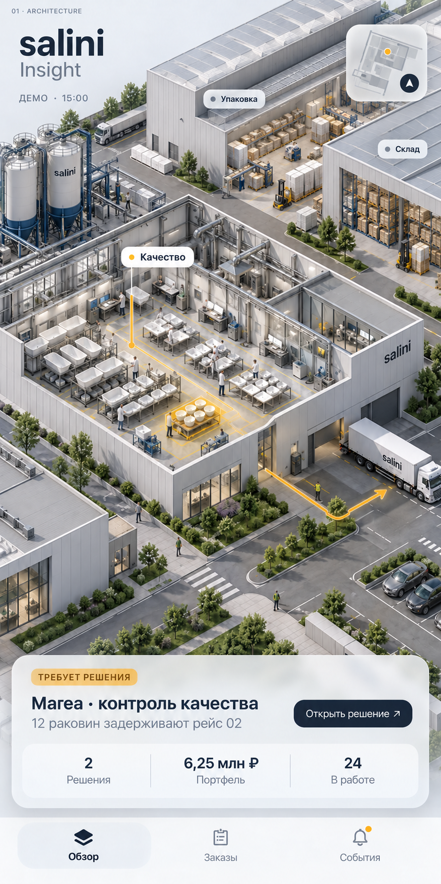
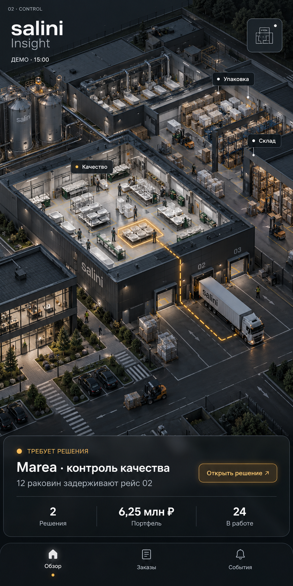
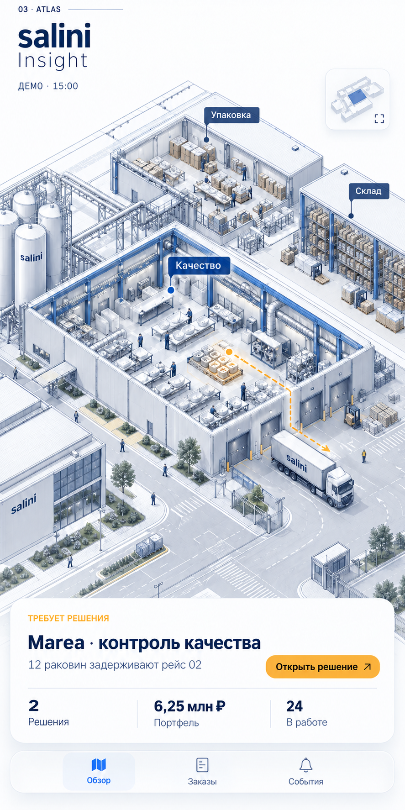
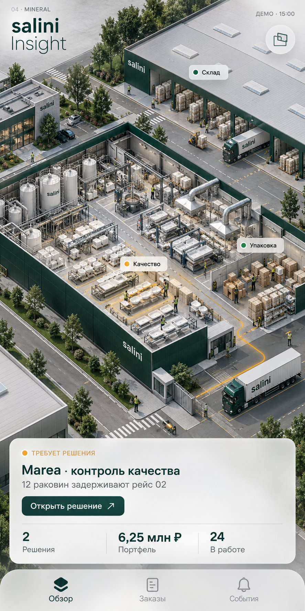
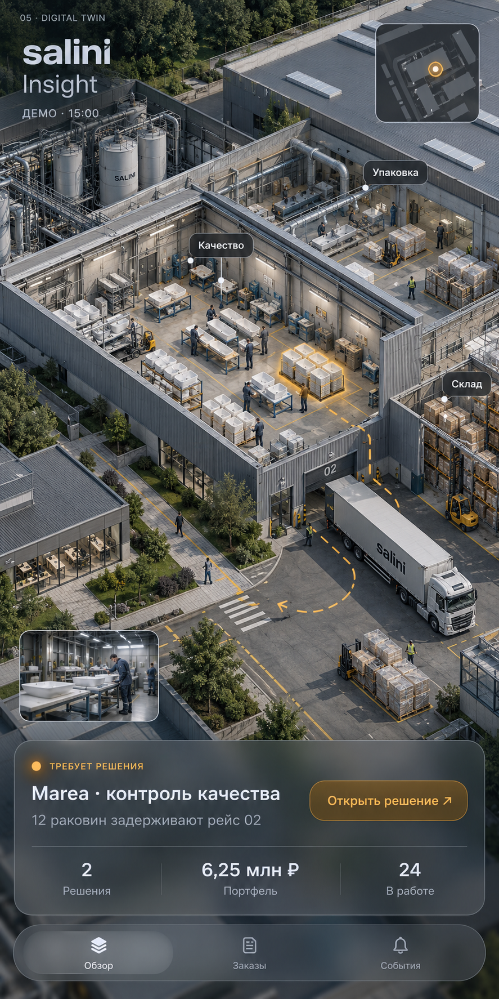

01
Светлая промышленная архитектура
Белые корпуса, металл, чистый дневной свет. Самый спокойный и универсальный вариант.
Открыть оригинал ↗Один сценарий для честного сравнения: партия Marea задержана контролем качества и влияет на рейс 02. Фиксированная изометрия, полноценные цеха, разнообразие изделий, склад и логистика. Демо-данные и концептуальная планировка. Нажмите на изображение, чтобы рассмотреть детали.

Белые корпуса, металл, чистый дневной свет. Самый спокойный и универсальный вариант.
Открыть оригинал ↗
Тёмный металл и освещённые рабочие зоны. Внимание сосредоточено на событии и решении.
Открыть оригинал ↗
Точная аксонометрия, чертёжные линии и выборочная заливка. Больше аналитики, меньше декоративности.
Открыть оригинал ↗
Глубокий зелёный, светлый минеральный материал, длинные производственные пролёты. Более характерный Salini.
Открыть оригинал ↗
Максимум правдоподобия: вентиляция, рабочие места, склад, безопасность, камера и отгрузка.
Открыть оригинал ↗Предпочтение для следующей итерации: № 4. Взять его характер и цвет, промышленную достоверность № 5 и ясность выделения событий № 3.
№ 2 — отдельное сильное направление, если нужен более строгий тёмный диспетчерский интерфейс.
| 1. Светлая промышленная архитектура | Много деталей читается при светлом окружении; выразительность зависит от качества теней и материалов. |
|---|---|
| 2. Графитовый центр управления | Сильная иерархия; для дневной работы понадобится столь же продуманная светлая тема. |
| 3. Инженерный атлас | Удобная основа для загрузки участков и маршрутов; тонкие линии нужно упрощать при отдалении. |
| 4. Минеральный модернизм | Мой выбор как основного направления: выразительный бренд и серьёзная промышленная среда. |
| 5. Реалистичный цифровой двойник | Самое убедительное ощущение производства; детали должны раскрываться постепенно, чтобы не перегружать телефон. |